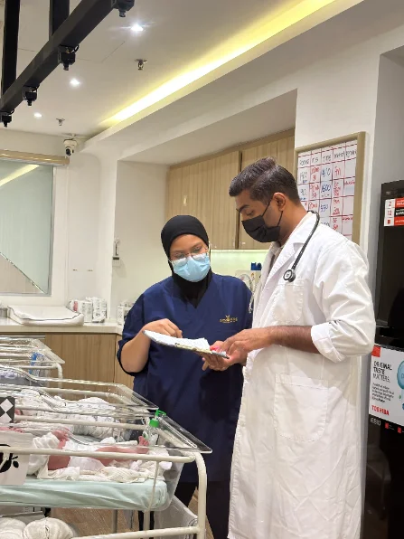
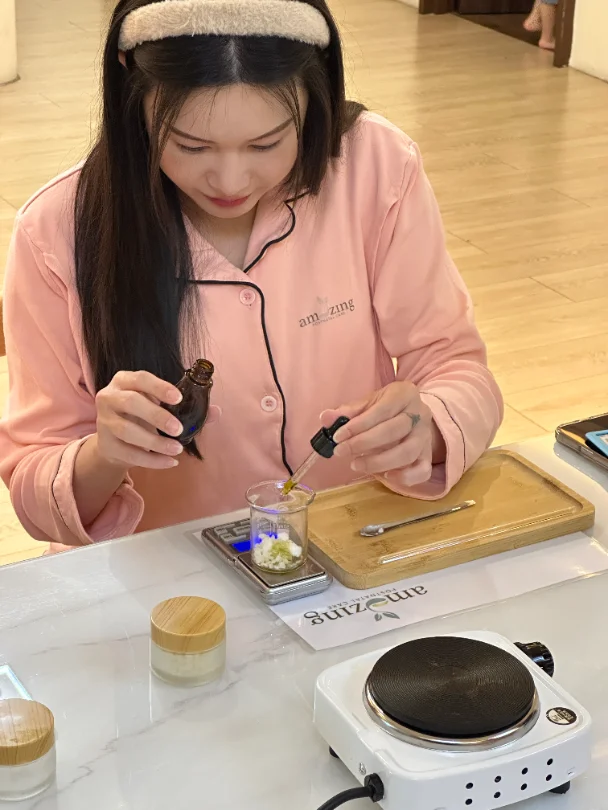
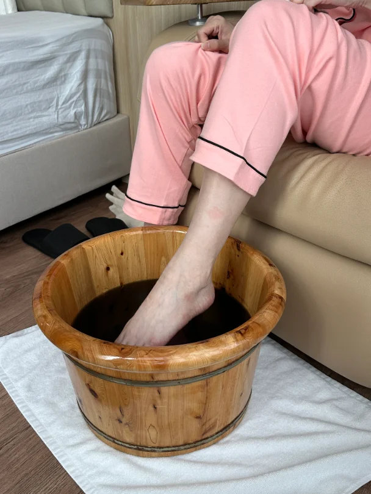
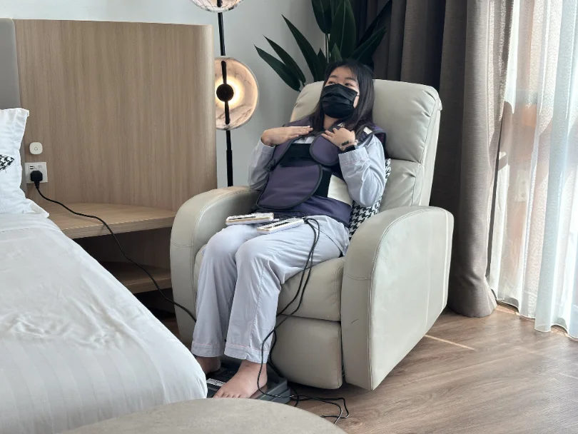
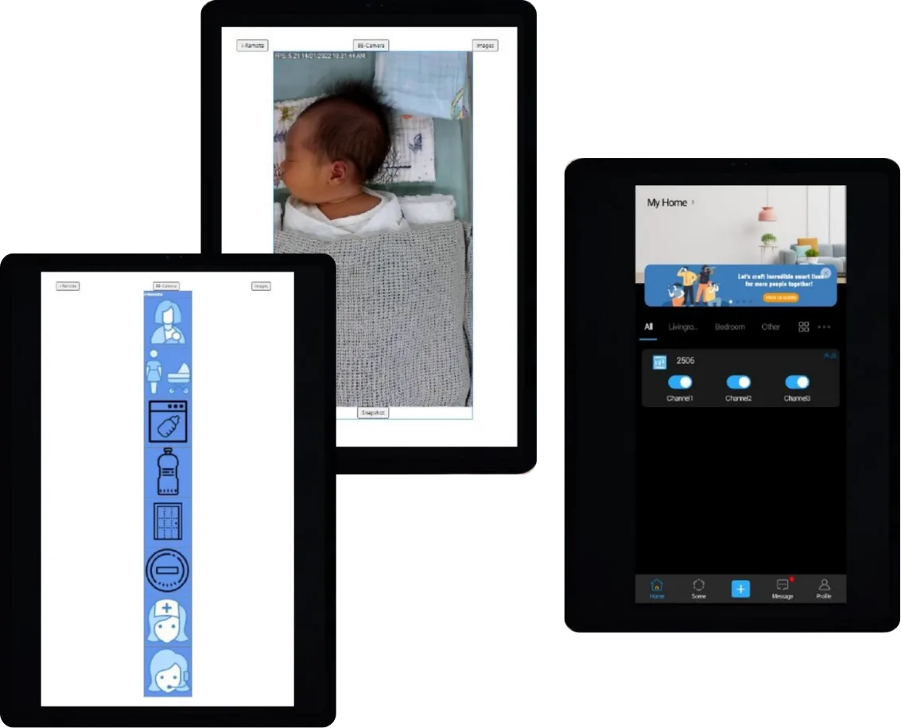

Our Care
照护服务
宝宝照护 NEWBORN CARE

24 小时护士
专业照护与隔离观察室

儿科医生
政府医院专科医师每周看诊

医疗设备
黄疸仪 · 血氧仪 · 听诊器

每日消毒
宝宝房每日打扫＋紫外线消毒
宝宝日常照护清单
婴儿游泳 · 婴儿抚触
早期感官刺激与发展
每日体重测量 · 生命特征监测
非侵入性黄疸检测
脐部和臀部护理
鸣哭与睡眠观察训练
可调动防溢奶婴儿车
隔离观察室
妈妈修复 POSTPARTUM RECOVERY





医疗检查
体重测量 · 血压测量
产后伤口检查
产后心理评估
观察恶露与子宫复旧情况
护士 24 小时待命
哺乳支持
一对一母乳喂养协助与指导
乳腺疏通按摩
泌乳师询问
调理
每周中医看诊
28 天沐浴药材
大风草泡脚
清洁卫生
每周紫外线消毒
每日打扫
＊部分按摩与护理服务，根据配套不同次数不同
I-Remote 智能系统
全屋智能控光
每个房间可用 iPad 调节灯光，妈妈更好修养。
平板实时探视
宝宝在婴儿房的每一刻，妈妈都看得见。
一键呼叫护士
24 小时护士守护，一键即到。

从产前到产后，陪您一起成为幸福新手爸妈

口红 · 香皂课

幸福妈妈学苑

新手爸妈课程
附加服务
产后按摩服务
宝宝写真
产后修复仪
新生儿纪念品
太空舱
租借挤奶器
泌乳师通乳服务
满月抓周仪式